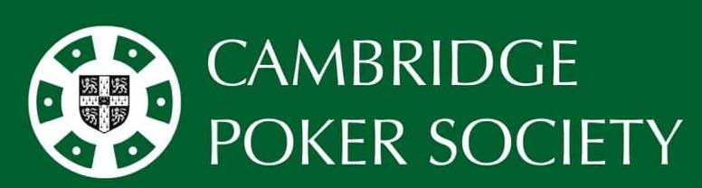

Cambridge University Poker Society
Event list (ongoing update)
-
26th October 2023: society tournament, see archive here .
-
14th November 2023: Committee Cup 2023MT
-
16th November 2023: society tournament, archive TBC
-
17th November 2023: society dinner social, jointly with Cambridge University Swimming and Water Polo Club. This shall take place at Yippee Noodle Bar (CB1 1LH) at 6pm.
-
19th January: Varsity Competition against Oxford at Jane Street London HQ (Dates and Location Confirmed. Further Details To Be Confirmed). Application to become a team member: click here.
-
4th February 2024: soceity tournament. Details TBC
-
23rd March 2024: Competition against other British and Irish universities at London. Details TBC
Fixtures
Committee Members (including vacancies)
- President: Parley R Yang
- Treasurer: Thapan Reddibathini
- Vice President: Sacked, position will be open for application soon.
- Captain of Varsity Team: Parley R Yang
- Vice Captain of Varsity Team: Will Knottenbelt
- Secretary: Sirui Hu
- Disciplinary Officer: Sam Bai
- Welfare Officer: Ethan Kang
- General committee members: John Cao, Chen Lu, Zhiyang Zhang, Sachin Sarin, and Dhanay Poddar
- Sponsorship officer: Vacant
- Technology Officer: Vacant
- Social Officer: Vacant
Varsity Team Members